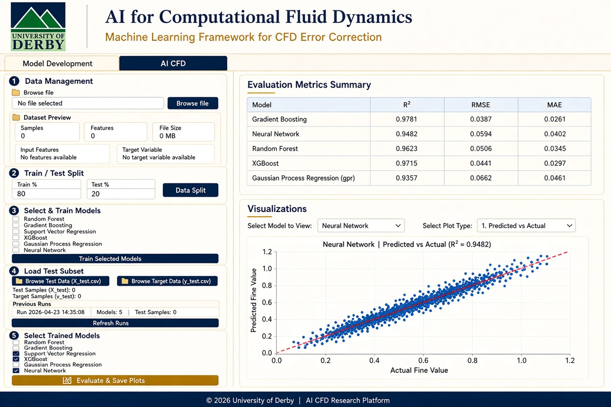
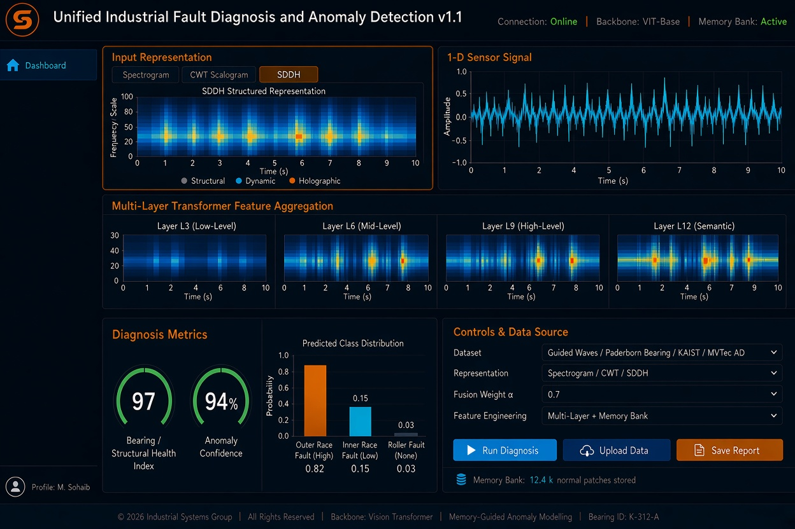

Dr. Muhammad Sohaib
University of Derby, UK
External Links
Biography
Dr. Muhammad Sohaib is an academic scholar and researcher specializing in Artificial Intelligence, Explainable AI (XAI), Machine Learning, and Signal Processing. His research focuses on developing advanced data-driven models, multi-modal sensing frameworks, and intelligent systems for fault diagnosis and prognosis.
Bringing extensive university-level teaching and academic leadership experience, Dr. Sohaib has spearheaded curriculum development, module delivery, and institutional quality assurance while supervising numerous postgraduate research projects. He actively contributes to high-impact research initiatives alongside global academic and industrial collaborators.
Professional Experience
Researcher in Data Science
University of Derby, Derbyshire, UK
Working on data-driven research across Digital Society, Collaborative & Data-Centric Engineering, and Digital Health & Well-Being clusters.
Postdoctoral Research Fellow
Zhejiang Normal University, Zhejiang, China
Awarded research fellowship leading multi-modal sensing frameworks for fault diagnosis, XAI, and data quality assessment.
Assistant Professor & Department Chairperson
Lahore Garrison University, Lahore, Pakistan
Head of Department of Software Engineering. Led curriculum development, module delivery, faculty mentorship, and postgraduate research supervision.
Publications & Research
Total Citations: 1,317+ | h-index: 18 | i10-index: 23
Optimizing learning outcomes: a deep dive into hybrid AI models for adaptive educational feedback
H. M. Qadir et al. | Journal of Big Data 12.1 (2025): 144
An adaptive feedback system for the improvement of learners
H. M. Qadir et al. | Scientific Reports 15.1 (2025): 17242
Deep Learning in Industrial Machinery: A Critical Review of Bearing Fault Classification Methods
A. U. Rehman et al. | Applied Soft Computing, p. 112785, 2025
Evaluating YOLO Models for Efficient Crack Detection in Concrete Structures Using Transfer Learning
M. Sohaib, M. Arif, J.-M. Kim | Buildings, vol. 14, no. 12, p. 3928, 2024
A robust self-supervised approach for fine-grained crack detection in concrete structures
M. Sohaib, M. J. Hasan, M. A. Shah, Z. Zheng | Scientific Reports, vol. 14, no. 1, p. 12646, 2024
A Multichannel Analysis of Imbalanced Computed Tomography Data for Lung Cancer Classification
M. Sohaib, M. J. Hasan, Z. Zheng | Measurement Science and Technology, 2024
Generalizing Infrastructure Inspection: Step Transfer Learning Aided Extreme Learning Machine for Automated Crack Detection in Concrete Structures
M. Sohaib, M. J. Hasan, J. Chen, Z. Zheng | Measurement Science and Technology, 2024
An Ensemble Approach for Robust Automated Crack Detection and Segmentation in Concrete Structures
M. Sohaib, S. Jamil, J.-M. Kim | Sensors, vol. 24, no. 1, p. 257, 2024
Efficient fault detection of rotor minor inter-turn short circuit in induction machines using wavelet transform and empirical mode decomposition
A. U. Rehman et al. | Sensors, vol. 23, no. 16, p. 7109, 2023
Automated Analysis of Sleep Study Parameters Using Signal Processing and Artificial Intelligence
M. Sohaib, A. Ghaffar, J. Shin, M. J. Hasan, M. T. Suleman | Int. J. Environ. Res. Public Health 19, 13256, 2022
Gearbox Fault Diagnosis using Improved Feature Representation and Multitask Learning
M. Sohaib, S. Munir, M. M. M. Islam, J. Shin, F. Tariq, M. Rashid, J.-M. Kim | Frontiers in Energy Research, 2022
Deep Learning Aided Data-Driven Fault Diagnosis of Rotatory Machine: A Comprehensive Review
S. Mushtaq, M. M. M. Islam, M. Sohaib | Energies, vol. 14, no. 16, 2021
An Explainable AI-Based Fault Diagnosis Model for Bearings
M. J. Hasan, M. Sohaib, J.-M. Kim | Sensors, vol. 21, no. 12, 2021
A Multitask-Aided Transfer Learning-Based Diagnostic Framework for Bearings under Inconsistent Working Conditions
M. J. Hasan, M. Sohaib, J.-M. Kim | Sensors, vol. 20, no. 24, p. 7205, 2020
An SVM-Based Neural Adaptive Variable Structure Observer for Fault Diagnosis and Fault-Tolerant Control of a Robot Manipulator
F. Piltan, A. E. Prosvirin, M. Sohaib, B. Saldivar, J.-M. Kim | Appl. Sci., vol. 10, no. 4, p. 1344, 2020
Fault Diagnosis of Rotary Machine Bearings Under Inconsistent Working Conditions
M. Sohaib, J.-M. Kim | IEEE Transactions on Instrumentation and Measurement, 69(6), 3334-3347, 2019
Data Driven Leakage Detection and Classification of a Boiler Tube
M. Sohaib, J.-M. Kim | Appl. Sci., vol. 9, no. 12, p. 2450, 2019
A Reliable Acoustic EMISSION Based Technique for the Detection of a Small Leak in a Pipeline System
T. B. Quy, S. Muhammad, J.-M. Kim | Energies, vol. 12, no. 8, p. 1472, 2019
Improving the Performance of Storage Tank Fault Diagnosis by Removing Unwanted Components and Utilizing Wavelet-Based Features
V. Tra, B.-P. Duong, J.-Y. Kim, M. Sohaib, J.-M. Kim | Entropy, vol. 21, no. 2, p. 145, 2019
Leakage Detection of a Spherical Water Storage Tank in a Chemical Industry Using Acoustic Emissions
M. Sohaib, M. Islam, J. Kim, D.-C. Jeon, J.-M. Kim | Appl. Sci., vol. 9, no. 1, p. 196, 2019
Crack Classification of a Pressure Vessel Using Feature Selection and Deep Learning Methods
M. Islam, M. Sohaib, J. Kim, J.-M. Kim | Sensors, vol. 18, no. 12, p. 4379, 2018
Reliable Fault Diagnosis of Rotary Machine Bearings Using a Stacked Sparse Autoencoder-Based Deep Neural Network
M. Sohaib, J.-M. Kim | Shock and Vibration, vol. 2018, Art. no. 2919637, 2018
A Hybrid Feature Model and Deep-Learning-Based Bearing Fault Diagnosis
M. Sohaib, C.-H. Kim, J.-M. Kim | Sensors, vol. 17, no. 12, p. 2876, 2017
A Robust Deep Learning Based Fault Diagnosis of Rotary Machine Bearings
M. Sohaib, J.-M. Kim | Advanced Science Letters, vol. 23, no. 12, pp. 12797-12801, 2017
Machine Learning Based Intelligent System for IP Traffic Classification
M. Sohaib, A. Khalil, K. Ahmad, J. Khan, F. Imtiaz | Sindh Univ. Res. Jour., Vol. 45, issue 4, pp 731-736, 2013
Image Enhancement for the 3-D Reconstruction in the Uncontrolled Environment using Shape from Silhouette
M. Sohaib, N. Ahmed, N. Minallah | International Journal of Computer Applications, Vol.70, No.11, 2013
Higher Order Spectral Analysis of Vibration Signals and Convolutional Neural Network for Fault Diagnosis of Induction Motor Bearings
M. Sohaib, J.-M. Kim | Springer International Publishing, Cham, pp. 3-12, 2019
1D CNN-Based Transfer Learning Model for Bearing Fault Diagnosis Under Variable Working Conditions
M. J. Hasan, M. Sohaib, J.-M. Kim | Springer International Publishing, Cham, pp. 13-23, 2019
Fault Diagnosis of a Robot Manipulator Based on an ARX-Laguerre Fuzzy PID Observer
F. Piltan, M. Sohaib, J.-M. Kim | Springer International Publishing, Cham, pp. 393-407, 2019
Hierarchical Radial Basis Function based Multiclass Support Vector Machines and A Hybrid Feature Pool for Bearings Fault Diagnosis
M. Sohaib, J.-M. Kim | 5th ICEE, UET Lahore, 2018
Quantitative Assessment of Heart Function: A Hybrid Mechanism for Left Ventricle Segmentation from Cine MRI Sequences
M. Sohaib, J.-M. Kim | Springer International Publishing, Cham, pp. 169-179, 2017
A Deep Neural Network and A Hybrid Feature Pool for Bearing Fault Diagnosis
M. Sohaib, J.-M. Kim | Engineering and Arts Society Korea, UOU, vol. 15, no. 1, 2017
Automated Feature Extraction for detecting Brain Tumors in Magnetic Resonance Imaging using a Genetic Algorithm
M. Hasan, J. D. Appana, M. Sohaib, K. Jong-Myon | IFOST 2017, Ulsan, South Korea, 2017
Deep Learning for Data-Driven Predictive Maintenance
M. Sohaib, S. Mushtaq, J. Uddin | Vision, Sensing and Analytics: Integrative Approaches, Springer, Cham, vol. 207, pp. 71-95, 2021
Grants, Fellowships & Sponsored Projects
AI for Computational Fluid Dynamics: Machine Learning Framework for CFD Error Correction
EMIZ Freight Locomotive Hydrogen Retrofit Project | University of Derby (2026)
Developed a comprehensive desktop machine learning evaluation framework designed to benchmark, train, and validate surrogate AI models for CFD error correction. The GUI integrates multi-model training (Random Forest, Gradient Boosting, Support Vector Regression, XGBoost, Gaussian Process Regression, and Deep Neural Networks) alongside interactive test-set validation plots ($R^2$, RMSE, MAE metrics).

GUI Interface for AI-based CFD Evaluation and Error Correction.
StrucSure — Postdoctoral Research Fellowship
Zhejiang Normal University (Apr 2023 – Apr 2025)
Awarded individual postdoctoral research fellowship grant to design multi-modal AI inspection and fault diagnosis models integrating optical and acoustic sensors with Explainable AI (XAI). A snapshot of the monitoring dashboard is shown below.

StrucSure Multi-Modal Structural Health Monitoring Dashboard Interface.
Data Science & AI Research Initiatives
University of Derby, UK (May 2025 – Present)
-
Industrial Foundation Models (IFMs) for Diagnostics: Developing multi-modal foundation models integrating 1D time-series signals (vibration, acoustic, ultrasonic) and 2D spatial imaging for industrial fault diagnosis, anomaly detection, and prognostic health management.

Unified Industrial Fault Diagnosis and Anomaly Detection Platform.
- East Midlands Investment Zone (EMIZ) Hydrogen Project: Contributing AI and data modeling research for hydrogen port fuel injection retrofit optimization in freight locomotives.
- Collaborative Multi-Partner Research Initiative: Assisting senior research colleagues on a multi-institutional partner project spanning data-driven engineering and digital society applications.
Sponsored Industrial Grants (AI & Signal Processing Specialist)
SHSE Human-Centered Industrial AI System
Ministry of Interior and Safety & KIAT, South Korea (2016 – 2019)
Contributed AI and signal processing models for real-time equipment fault diagnosis and health monitoring.
Pipeline Leak Detection & Maintenance System
Kyungdong City Gas & MOTIE, South Korea (2018 – 2019)
Developed data-driven acoustic emission (AE) signal processing, feature transformation pipelines, and deep learning classification algorithms for micro-leak detection and structural fault evaluation.

GUI for AE Feature Extraction, Model Development, and Evaluation Metrics.
Teaching & Student Supervision
MSc & BSc Research Supervisions
- Mirza Bilal (MSc Co-Supervisor, ZJNU China, 2023-Ongoing) — Formation Pressure Prediction and Kick Detection Dataset for Oil/Gas Well Drilling Rigs
- Ali Haider (MSc Supervisor, LGU Pakistan, 2021-2023) — Application of Deep Learning for Surface Crack Detection in Concrete Structures
- Ayesha Ghaffar (MSc Supervisor, LGU Pakistan, 2020-2023) — Automated Analysis of Sleep Study Parameters using AI
- Shahid Muneer (MSc Supervisor, LGU Pakistan, 2020-2023) — A Data Driven Gearbox Fault Identification Mechanism Under speed and Load Fluctuations
- Adeel Riaz (MSc Supervisor, LGU Pakistan, 2020-2022) — Detection of Lung Cancer using Artificial Intelligence and Computed Tomography images
- Zulqernain Abbas (MSc Supervisor, LGU Pakistan, 2020-2022) — Gearbox Fault Diagnosis Under Uneven Working Conditions
- Sehar Afzal (MSc Supervisor, LGU Pakistan, 2020-2022) — Anomalous Behavior Detection Mechanism for IoT Devices Using Deep Learning
- Abdullah Tahir & Dur-e-Nayab (BSc Thesis Mentors, LGU Pakistan, 2021) — InternEase Platform
- Muhammad Kashif & Nomair Sagheer (BSc Thesis Mentors, LGU Pakistan, 2021) — Embedded Solution for Indoor Fire Detection
Awards, Honors & Scholarships
- Postdoctoral Research Fellowship — Zhejiang Normal University, China (2023–2025)
- BK21+ Research Excellency Award — KR Govt. / University of Ulsan, KR (2018, 2019, 2020)
- BK21+ Overseas Traveling Grant (Conference) — KR Govt. / UOU, KR (2017, 2018)
- BK21+ Domestic Traveling (Conference) Grant — KR Govt. / UOU, KR
- Highly Cited Paper Award — MDPI Energies (2022, 2023)
- Brain Korea (BK21) Fellowship — KR Govt. / UOU, KR (2016–2019)
- President Scholarship — University of Ulsan, KR (2016–2018)